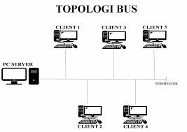
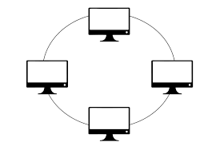
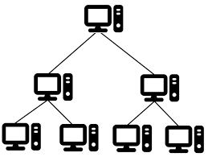
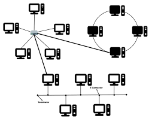

Berikut adalah jenis-jenis Topologi jaringan
| NO | Jenis Topologi Jaringan | Gambar | Keterangan |
| 1 | BUS |  | Topologi Bus adalah topologi dimana setiap node terkoneksi melalui kabel utama atau bus atau backbone(ini sangat efisien dengan jumlah node yang tidak banyak) |
| 2 | STAR | |
Topologi star adalah topologi dimana setiap node terkoneksi melalui node konektor pusat(topologi ini banyak dipakai karna kemudahanya) |
| 3 | RING |  | Topologi ring adalah topologi dengan hubungan antar node terjadi antar satu node dengan note tetangganya dan membentuk konfigurasi lingkaran atau cincin. |
| 4 | TREE |  | Topologi Tree adalah topologi yang membentuk hubungan antar node seperti cabang pada pohon(biasa digunakan untuk pengaturan jaringan pada institusi yang memiliki hirarki) |
| 5 | HYBRID |  | Topologi Hybrid adalah topologi yang menggabungkan du atau lebih topologi jaringan,seperti topologi bintang,cincin, dan mesh |
Topologi jaringan yang lebih kompleks cenderung membutuhkan biaya instalasi yang lebih tinggi, karena melibatkan lebih banyak waktu, kabel, dan perangkat. Jangkauan jaringan yang lebih luas memerlukan kabel lebih banyak, dan jenis kabel juga mempengaruhi biaya. Kabel fiber optic, meskipun lebih cepat dan memiliki kapasitas lebih besar, lebih mahal dibandingkan dengan kabel tembaga. Pemilihan topologi yang tepat harus mempertimbangkan kinerja jaringan, jangkauan, jumlah komputer yang terhubung, dan anggaran.
Skalabilitas adalah faktor penting dalam memilih topologi jaringan, terutama jika ada rencana untuk memperluas jaringan di masa depan. Topologi yang mudah dimodifikasi, seperti topologi bintang, memungkinkan penambahan atau pengurangan node dengan gangguan minimal. Berbeda dengan topologi Ring, yang bisa menyebabkan seluruh jaringan tidak berfungsi saat menambah node baru. Topologi yang mudah dimodifikasi membantu menghemat waktu dan mempermudah proses instalasi.
Berikut Komponen yang membentuknya adalah:
Untuk mempermudah pemahaman, jaringan komputer dikonsep dalam model berlapis (layered model), dimana setiap lapisan memiliki tugas tertentu, mirip dengan sistem tubuh manusia yang terdiri dari berbagai organ dengan fungsi spesifik.
Berikut adalah arsitektur model jaringan berlapis

Open System Interconnection (OSI) Model adalah model yang diciptakan oleh “International Organization for Standardization (ISO)” untuk mengatur standar protokol dan format data yang berbeda dari banyak perusahaan penyedia jaringan komputer. Model ini menggunakan model lapisan yang terdiri atas 7 lapisan, seperti tampak pada Gambar berikut:

TCP/IP adalah protokol utama yang digunakan di internet, dikembangkan pada 1980-an untuk menghubungkan berbagai komputer dan jaringan. Protokol ini menggunakan IP address untuk menghubungkan sistem yang berbeda seperti Windows dan Linux. Keunggulannya adalah standar terbuka yang dapat beroperasi tanpa tergantung pada perangkat keras atau sistem operasi. TCP/IP membagi data menjadi paket kecil dan IP menambahkan alamat tujuan. Paket data dapat melewati jalur yang berbeda dengan bantuan router. Jika terjadi kerusakan, perangkat penerima akan meminta data dikirim ulang. Gateway memungkinkan jaringan berbeda berkomunikasi dengan internet.
Transmisi data adalah proses berbagi atau bertukar data antara dua objek, alat, atau sistem. Bagian penting dari komunikasi data dapat dilihat pada gambar berikut.

Transmisi data pada jaringan komputer dan internet umumnya tidak dilakukan dalam ukuran besar untuk menghindari kendala pada kemampuan medium dan untuk memastikan keandalan pengiriman. Data dikirim dalam bentuk paket kecil yang disebut data packets atau datagram. Ukuran paket data bisa tetap atau dinamis, tergantung kebutuhan sistem, namun biasanya sekitar 64 KiB agar lebih mudah dikelola.
Paket Data terdiri dari 3 bagian utama:
Untuk setiap paket, packet header, berisi:
Lalu untuk Packet payload berisi:
Dan terakhir Packet trailer berisi:
Packet switching adalah salah satu cara transmisi paket data yang paling banyak digunakan, dimana data akan dipecah ke dalam beberapa paket data dan dikirimkan secara independen dari titik awal ke titik tujuan.
misalnya kalian sedang mengirimkan sebuah surel yang berisi foto kalian dari laptop kalian ke ponsel milik teman kalian. Surel dan foto tersebut akan dipecah dalam beberapa paket data sebelum dikirimkan. Paket-paket data akan dikirim melalui jalur atau rute dari komputer A ke komputer B, melalui node yang bisa berupa router, switch, komputer, dan lain sebagainya.
Berikut gambar jalur pengiriman paket data dari komputer A ke komputer B:
Berikut gambar pergerakan pengiriman paket data dari komputer A ke Komputer B
Kelebihan metode paket switching
Kekurangan metode paket Switching
Adapun bentuk-bentuk kesalahan yang dapat terjadi pada pengiriman data yaitu
Kesalahan yang terjadi pada proses pengiriman data tersebut dapat dikendalikan dengan dua cara yaitu:
Beberapa cara kesalahan pada pengiriman data, diantaranya yaitu:
1. Parity Check
2. Checksum